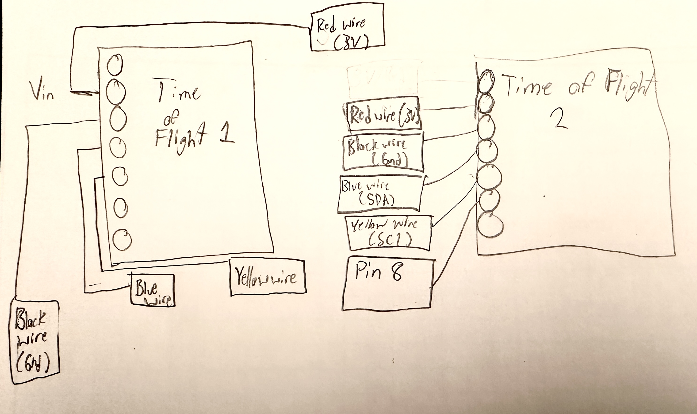

INTRODUCTION
Nowadays, there are all sorts of smart devices that use a variety of sensors to communicate with the world. The robot I'll be using this semester must be able to detect and communicate distance precisely and quickly to keep up with the high-speed stunts planned. To do that, I'll be implementing a time of flight sensor, which I plan on mounting on the front and side of my robot. This should prove efficient at calculating the position of the robot and should be away from any mechanical distrubance such as a stray wheel.
VL53L1X Sensor
Wiring these sensors is a fairly simple task with the help of the QWIIC cables (just remember blue is SDA and yellow goes to SCL), but interacting with them can be a bit tricky. The listed default I2C address is 0x52, however, reading the device address will show that the address is actually 0x29. Looking at the binary, we can see that 0x29 is just 0x52 bitshifted to the right. This happens because the rightmost bit is used to indicate whether data should be read or written to the address. Keeping that in mind I can correctly identify the ToF sensor on the I2C Bus.
What happens if I wanted to use another Time of Flight sensor? Because two simliar sensors have the same address, there would be no way to verify which information came fom which sensor. To solve this problem I have to manually switch off a sensor and change the address of the remaining one sensor. Thankfully, the libraries make this process fairly straightforward. By toggling the XSHUTOFF pin on the sensor and utillizing the method:
distanceSensor2.setI2CAddress(ADDRESS_2);
I can use both sensors!
Time of Flight Modes

The VL53L1X sensor given comes with some versatility in the form of a distance specification. If range is preferred above all else, the long distance setting allows a range of up to 4 meters at a cost of sensitivity to ambient noise. If quality of the signal should be prioritized the short distance setting allows for up to 1.4 m of ambient light resistant distance detection. For the best of both worlds a mid range option also exists. Since I value accuracy and noise resistance, I chose to stick with the short range option.
Sensor Data
In order to become familiar with the sensor, I ran a couple tests to determine basic characteristics such as: range, accuracy, repeatability, and ranging time. Each test was repeated multiple times and was performed on a table with carefully marked distances measured with precision calipers.
RANGE: 50mm-1450mm
Testing the range of the sensor was fairly straight forward. I placed a flat white box in front of the sensor and measured the distance between them. Once the values strayed beyond an error of around 10 mm I declared that measurement as the bound. Doing that, I found the range of the sensor to be between 50mm-1450mm
ACCURACY: 4mm
I took five seperate measurements at five distances, averaging the results from each distance and made a plot of the values below. By averaging the error from each distance I have determined the average error of this sensor to be around 4 mm.
REPEATABILITY
To discern the repeatability of the data collected from the Time of Flight Sensors, I took ten measurements at 3 seperate distances and compiled the results into the following graphs:
RANGING TIME: 97 ms
The last characteristic I determined was Ranging time. I defined this as the time between new sensor readings. By taking an average value of approximately 100 time runs for data retrieval, I determined that the ranging time of my Time of Flight sensor was around 97 ms.
SEEING DOUBLE
The next test was to enact the theory introduced earlier and get two Time of Flight sensors working at once. The code for this is fairly straight forward and with some slight modification of the given example code, I was able to make it work.
Waiting for data to be available from both sensors slowed down the code quite a bit, so I was told to modify the code further in order to print the time while waiting between distance readings. The result was this:
The loop that printed the time ran about every 3-4 ms. I suspect that the limiting step was the check at the top of the while loop that checked each time to ensure data wasn't available. When the sensors detected data, however, the whole output slowed down 10-40 ms to retrieve the data from the distance sensors.
DOUBLE SENSOR COMMUNICATION
The final task of this lab, and an incredibly useful feature, was to send data from the Time of Flight Sensors from the Artemis through bluetooth onto our computers. I never realized how much data measuring distances took up until I encountered this task. Regardless, I was able to identify an appropriate number of stored data points to send and from there was able to parse the data into a graph shown here:
CONCLUSION
This lab taught me a great deal about the limitations and applications of the sensors I take for granted every day. The most robust and well designed devices are able to integrate several types of sensors all it once and I now finally understand why. Every sensor has its strengths and weaknesses and by combining the strengths of a variety of instruments, they are each able to cover the others weakness.